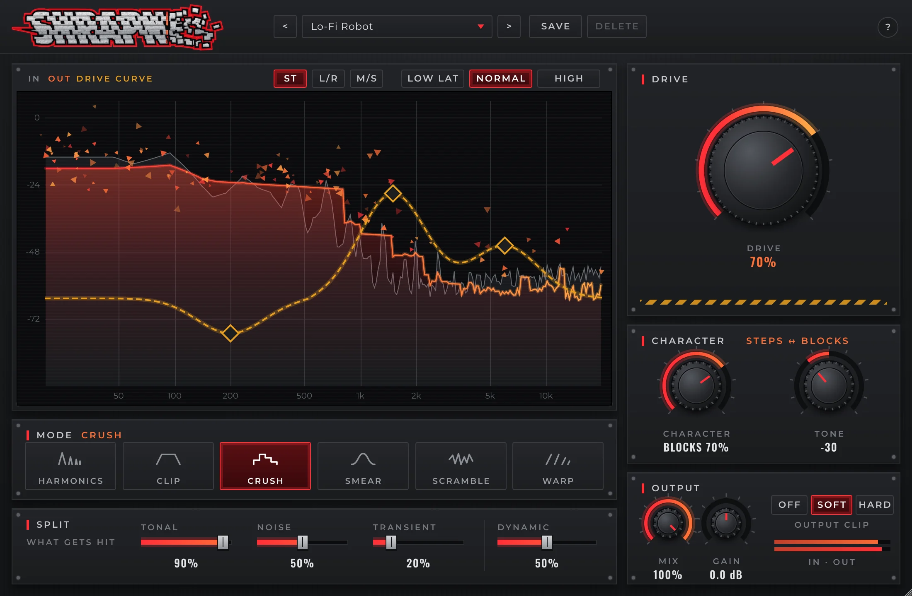

Harmonic loudness
Precision sidechain
The sidechain weapon. Put it on the bass, send it the kick, and it ducks clean, tight and on time, with zero latency. It fits the duck to your kick, learns the groove so the bass is already down when the kick lands, and can even read your whole drum bus ahead of time, so every kick and snare gets its own duck.
Free · Windows: .zip with the VST3 and the app · macOS: installer with AU, VST3 and the app, for Apple Silicon and Intel
User manual (PDF) Want them all? Get the full suite of 9
Hear it
Bounced from a real session. 808: a kick and an 808, with Kick -> 808 and the Punch-Through Long shape, and with the 808 Tail preset (BAND on FULL). Mix: a whole song, with RECOIL on the bass bus. AUDIO is the Default preset with the kick on its sidechain; MAP is the Drum Bus Map preset with the drum bus and the bass bus bounced and loaded, so every kick and snare gets its own duck. Tick Match loudness to compare at equal volume.
Overview
RECOIL turns a track down in a shape you choose every time something triggers it: a kick on its sidechain input, a MIDI note, the beat of the song, or a map of your drum bus.
It is built to sound clean at any depth: every drop is a smooth fade, so the bass never clicks, the audio passes untouched between hits, and there is zero latency. In AUDIO mode it listens to the kick's low end, sizes the shape to each kick (FIT LENGTH) and learns the groove to start each duck a few milliseconds early (GROOVE LOCK). The default fits most kicks: load it, send it the kick, press play.
MAP mode goes one step further: drop a bounce of the song's drum bus on RECOIL and it finds every kick, snare, rim and hat, how loud each one is and how long it rings. The bass then ducks exactly on each hit, with its own depth and shape for kicks and snares, and ghost notes handled their own way. Add a bounce of the bass bus and every duck follows the bass that is really playing.
Good for
Quick start
Reference
What starts the shape: the song's beat, MIDI notes, the sidechain input, the map of your drum bus, or RM (sample by sample, no shape). On a mode's starting preset (Default, Pump 1/4, MIDI Duck, Drum Bus Map, RM Squeeze), picking another mode loads that mode's starting preset.
AUDIO: the level a hit has to reach. Hits must also come within 20 dB of the recent kicks.
AUDIO: listen below 150 Hz, or to the whole trigger.
AUDIO and MIDI: how much softer hits duck less. 0% ducks every hit fully.
AUDIO: sets LENGTH from how long each kick's low end rings (the median of the last 4 kicks).
AUDIO: with the song playing, learns the kick pattern within the bar and starts each duck a few ms before a learned kick. If that kick doesn't come, it lets go.
SYNC: how long one cycle is.
SYNC: note value type.
SYNC: moves the cycle earlier or later.
SYNC: delays every second cycle by up to a third of a cycle.
SYNC: lines the cycle up with the kicks on the sidechain input.
MIDI: which note starts the shape.
Kick plus bass may not go above this. On every sample the bass gets only the room the kick leaves under it. Lower: more squeeze. It compares with the kick as it arrives on the sidechain, so keep the send at unity.
The furthest the bass may go down.
How long the bass stays down before it starts back up.
How fast the bass comes back after each squeeze. Longer: smoother, less grit, a little less level. HOLD and SMOOTH at 0: the bass follows the kick's waveform sample by sample, the grittiest.
How far down the bass is going right now.
The drum bus of the whole song, bounced from bar 1. Or drop the file on RECOIL.
The bass bus, bounced from bar 1 with RECOIL bypassed. Lets each duck follow the bass under it.
With a bass bounce: one shape per kind of bass, or computed ducks.
AUTO: how far each kick and snare should stand above the bass.
AUTO: the fastest the bass comes back up (20 dB).
PER BASS: the shape for kicks over each kind of bass. Snares use SNARE.
How deep the kicks duck.
How deep snares and claps duck.
How deep rimshots and sticks duck.
What ghost notes do. The Drum Bus Map preset uses SCALE.
How much quieter than the main hits a ghost note is.
Moves the whole map. Presets leave it alone, as it belongs to the song.
Sets OFFSET from the kicks on the sidechain input (optional; needs the drum bus or the kick there).
Kicks and snares each have their own shape (rims use the snare's). Pick KICK or SNARE at the top of the SHAPES panel, then choose or edit that shape.
Switch single hits off or on.
How far the level goes down at the bottom of the shape. All the way is silence.
AUDIO, MIDI and MAP: how long one cycle of the shape lasts. With FIT LENGTH on, it follows the kick (in MAP: each hit's own length, PER HIT). In SYNC the RATE sets it.
Bends the whole shape: right comes back sooner, left stays down longer.
How long the drop takes. In SYNC and MAP it starts this much before the hit, so the bass is already down when it lands. 4 ms is click-free on any bass; under 2 ms can click.
Click a tile to use that shape. Right-click one of your own to delete it. + saves the current shape.
FULL ducks the whole signal; SPLIT ducks only the band. Both leave the audio untouched between hits.
Drag the two handles (or the edges on the SPECTRUM view) to pick the band.
SOFT fades over about an octave with the least phase shift; HARD is steeper (24 dB/oct).
How much of the duck the band gets.
How much of the duck the rest of the spectrum gets. 0% (the default, in every preset) leaves it untouched.
Off in SYNC and MIDI, where no kick reaches RECOIL. AUTO turns the bass's phase so its low end lines up with the kick where they overlap; it learns over a few hits, then locks, and only moves while the bass is ducked. MANUAL: set it with ROTATE. OFF: the phase is left alone.
MANUAL: how far the bass's phase is turned. 0° is the original. In AUTO it shows the turn RECOIL picked.
Flips the bass upside down (the same as 180°).
AUTO: forget the learned turn and listen again, after you change the kick or the bass.
How much of the ducking you hear: 50% ducks half as deep.
Output level.
How much level the ducking takes on average, if you want to make it up with GAIN.
The sidechain input level and the output level.
The display's view.
WAVE: one lane per hit (the duck as a solid fill, the kick filled, the bass over it) instead of two lanes. Saved with the project.
Eases into the duck over the first few ms instead of slamming, so the hit keeps its punch. The everyday choice.
Fully down for a moment, then a smooth return.
Holds a little longer and snaps back quickly.
A soft dip and an even return. Gentle on sustained sounds.
Punch-Through with a longer return, for slower tempos and long kicks.
A longer hold and a long return: the classic pump.
Stays down, then snaps back hard.
A short, fast duck for busy patterns.
Silent on the hit, swells in, cuts before the next one.
Plays the start of each cycle, then cuts.
Untouched on the hit, dips late in the cycle.
Builds up to a peak late in the cycle.
A gate that opens halfway through the cycle.
Fades away over the cycle.
Drops away, then rises back into the next hit.
A short blip, then a long rise: two pumps per cycle.
Total silence for the kick's body, then a fast smooth return. Pair it with FIT LENGTH.
Clears the transient fully, holds the 808 low through the kick's body, then lets it bloom.
Comes back slightly above the original level, then settles: the bass hits back after each kick.
A very short duck that only clears room for the kick's click. For vocals and top end.
Every plugin window scales from 60% to 200%: drag the bottom-right corner. Double-click a knob to return it to its default.
Sidechain
In AUDIO and RM mode RECOIL listens to the trigger on its sidechain input. Here is how to get the kick there in the common DAWs. (RM needs the kick at unity level, as CEILING compares with it. SYNC needs no sidechain and MIDI needs a MIDI track routed to RECOIL. MAP ducks from the map alone, but send it the whole drum bus the same way: ALIGN and the snare views in SPECTRUM and WAVE need it.)
Presets
Click SAVE to store your own. They are kept in %APPDATA%\RECOIL\Presets on Windows and ~/Library/Application Support/RECOIL/Presets on a Mac, so you can back them up or share them.
Tips
Install
Open the downloaded .zip. Inside is the plugin (.vst3) and a standalone app.
Move the .vst3 to C:\Program Files\Common Files\VST3. Every Windows DAW looks there.
Let your DAW scan for new plugins. The plugin shows up under Noise Division.
Windows 10 or 11, 64-bit. VST3 host or the standalone app.
Double-click the .pkg. It installs the Audio Unit, the VST3 and the standalone app.
Open System Settings, Privacy & Security, scroll down and click Open Anyway. This shows once, because the installers aren't from the App Store.
Logic and GarageBand find the AU on their next start. Ableton Live, FL Studio, Reaper, Bitwig and Studio One use the VST3.
macOS 10.13 or newer, Apple Silicon or Intel. AU or VST3 host, or the standalone app.
Installation, every control, presets, tips and troubleshooting in one PDF to keep next to your DAW.
Help
AUDIO: the trigger isn't arriving. The INPUT meter stays still and the status says “no input”. Check the sidechain routing in your DAW. SYNC only runs while the song plays. MIDI needs a MIDI track routed to RECOIL.
The kick must arrive on the sidechain input, and kick plus bass must reach CEILING: lower CEILING until SQUEEZE moves.
Raise SMOOTH (10 ms in RM Squeeze), or add a little HOLD. Use SPLIT so only the low end is squeezed.
Keep LISTEN on KICK LOWS and raise THRESHOLD a little.
Raise ATTACK. 4 ms (the default) is clean on any bass; under 2 ms can click. Projects saved with an older RECOIL keep their old ATTACK.
Turn FIT LENGTH off and drag the brass LENGTH tab, or pick a shorter or longer shape.
AUTO needs the kick and the bass overlapping, ideally on the same note. With a kick tuned differently or a moving bassline there is no single best turn: leave PHASE off.
SPLIT and FULL both leave the audio untouched between hits. With PHASE on, the band split shifts the phase a little around its edges: turn PHASE off, or use FULL.
The bounce must start at bar 1 (time 0) of the song. Small differences: send the kick to the sidechain too and click ALIGN, or set OFFSET. A different arrangement since the bounce: bounce again.
The bass bounce no longer matches the song (the bass part changed), or it was bounced with RECOIL on. Bounce the bass bus again with RECOIL bypassed and load it with BASS.
ALIGN, the kick check, the dashed curves in SPECTRUM and the snare, rim and ghost views in WAVE read the drum bus on the sidechain input. Route the drum bus to RECOIL's sidechain as in AUDIO mode (see Sidechain).
MAP only runs while the song plays. Check that a map is loaded (the MAP view shows the hits) and that KICK and SNARE are above 0%.
That's because it can take MIDI notes as its trigger. It works the same as an audio effect.
Check the .vst3 is in C:\Program Files\Common Files\VST3 (Windows) and rescan. On a Mac, run the installer again and restart the DAW.
Rescan with Verify plugins ticked in the plugin manager.
System Settings, Privacy & Security, Open Anyway. The installers aren't signed with an Apple developer certificate yet.
Click More info, then Run anyway. This only concerns the standalone app.
Drag the bottom-right corner. Every plugin scales from 60% to 200% and remembers the size.
E-mail noisedivision@proton.me with the plugin name, version, your DAW and your operating system.
More from Noise Division
Harmonic loudness

Multiband distortion

Spectral distortion

One-knob darkener

Spectral compressor

Soft clipper

One-knob mastering

Clean loudness
Support
Everything here is free and stays free. If a plugin made it into your tracks and you want to say thanks, a donation pays for the time that goes into new plugins and updates.